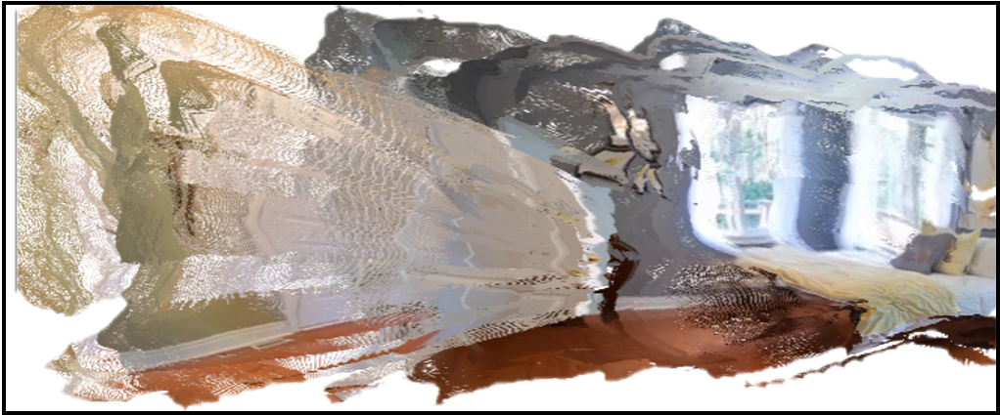

Highlight
Geometry Forcing
Baseline


(b) Underlying 3D Representation
Geometry Forcing equips video diffusion models with 3D awareness. (a) Generated Video shows the video generated by the baseline method and our method. The baseline method produces inconsistent scenes, while our method generates clear and consistent room scenes. (b) Underlying 3D Representation shows the 3D representation learned by the baseline method and our method. The features learned by the baseline model fail to predict meaningful 3D scenes, while our method internalizes 3D representation, enabling predicting better 3D scenes from the intermediate features.